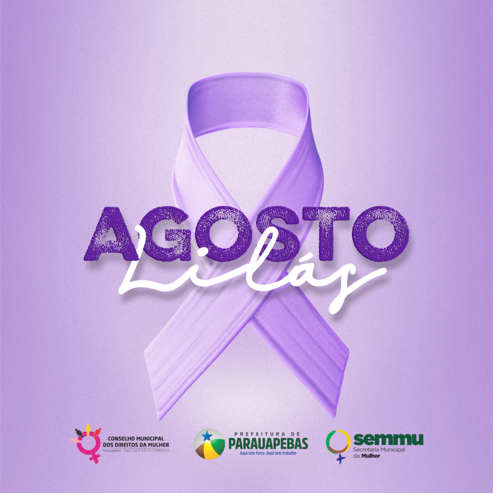

Campanha de conscientização pelo fim da violência contra a mulher
Site criado por Heloisa Fernandes
O que é?
O Agosto Lilás busca conscientizar a sociedade sobre a violência contra a mulher, incentivar denúncias e divulgar direitos de proteção, como os garantidos pela Lei Maria da Penha.

O laço lilás simboliza a campanha.
Tipos de violência
Física: agressões que ferem a integridade corporal.
Psicológica: humilhações, ameaças, chantagem.
Sexual: estupro, assédio, impedir uso de contraceptivos.
Patrimonial: destruição ou retenção de bens e dinheiro.
Moral: calúnia, difamação e injúria.
Canais de denúncia
180: Central de Atendimento à Mulher.
190: Polícia Militar em emergências.
Delegacias: registro de boletins e medidas protetivas.
Direitos
A Lei Maria da Penha garante medidas protetivas, atendimento integral e acesso à rede de saúde, justiça e assistência social.